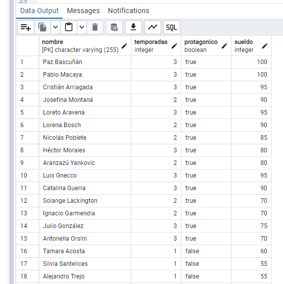
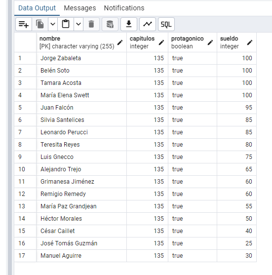
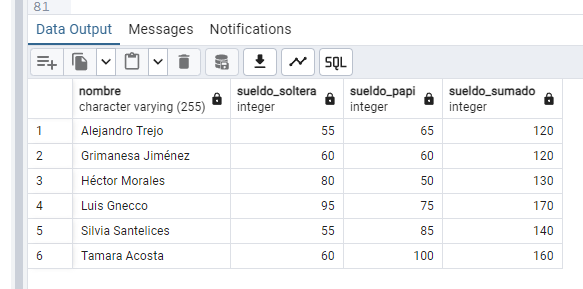
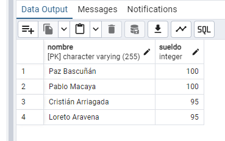
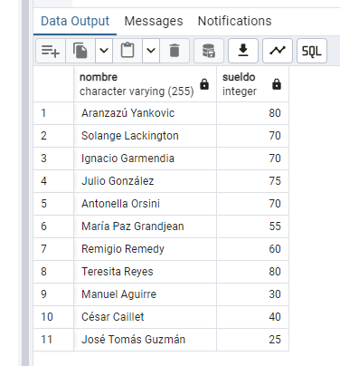
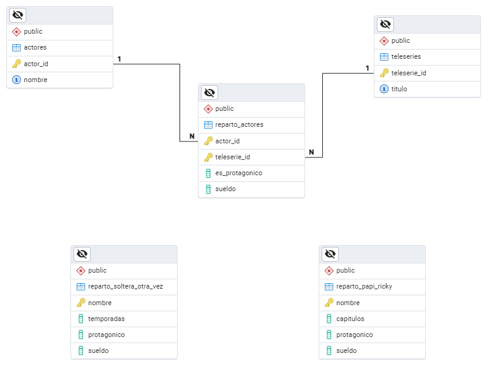
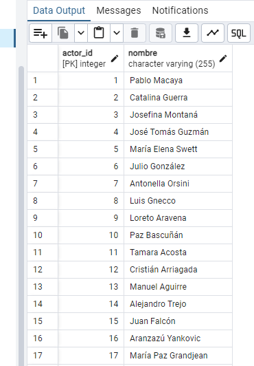
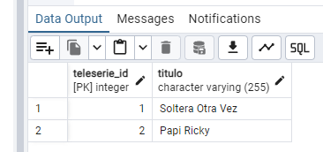
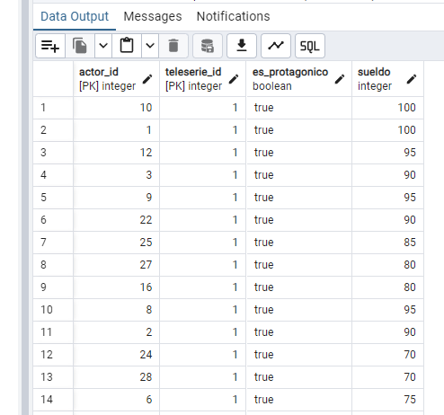
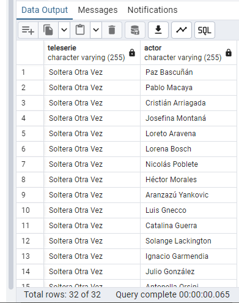

Resolución de consultas complejas y reestructuración de datos mediante Normalización de Tercera Forma Normal (3FN).
Carga de datos desde evaluacion.sql para las tablas planas de
reparto.


Actores en ambas producciones con sueldo total sumado.
SELECT s.nombre, s.sueldo AS sueldo_soltera, p.sueldo AS sueldo_papi, (s.sueldo + p.sueldo) AS sueldo_sumado
FROM reparto_soltera_otra_vez s
JOIN reparto_papi_ricky p ON s.nombre = p.nombre
ORDER BY s.nombre ASC;
SELECT s.nombre FROM reparto_soltera_otra_vez s
LEFT JOIN reparto_papi_ricky p ON s.nombre = p.nombre
WHERE p.nombre IS NULL AND s.sueldo > 90;
SELECT COALESCE(s.nombre, p.nombre) FROM s
FULL OUTER JOIN p ON s.nombre = p.nombre
WHERE (s.nombre IS NULL OR p.nombre IS NULL)
AND COALESCE(s.sueldo, p.sueldo) < 85;
Diagrama Entidad-Relación (DER)

Poblamiento y Tablas Maestras



--Poblar Actores
INSERT INTO actores (nombre)
SELECT nombre FROM reparto_soltera_otra_vez
UNION
SELECT nombre FROM reparto_papi_ricky;
--Poblar Teleseries
INSERT INTO teleseries (titulo) VALUES ('Soltera Otra Vez'), ('Papi Ricky');
--Poblar tabla Puente
-- Insertar datos de Soltera Otra Vez
INSERT INTO reparto_actores (actor_id, teleserie_id, es_protagonico, sueldo)
SELECT a.actor_id, t.teleserie_id, r.protagonico, r.sueldo
FROM reparto_soltera_otra_vez r
JOIN actores a ON r.nombre = a.nombre
JOIN teleseries t ON t.titulo = 'Soltera Otra Vez';
-- Insertar datos de Papi Ricky
INSERT INTO reparto_actores (actor_id, teleserie_id, es_protagonico, sueldo)
SELECT a.actor_id, t.teleserie_id, r.protagonico, r.sueldo
FROM reparto_papi_ricky r
JOIN actores a ON r.nombre = a.nombre
JOIN teleseries t ON t.titulo = 'Papi Ricky';Obtención de todos los actores protagónicos vinculados a sus respectivas teleseries desde el modelo normalizado.
SELECT t.titulo AS teleserie, a.nombre AS actor
FROM reparto_actores ra
JOIN actores a ON ra.actor_id = a.actor_id
JOIN teleseries t ON ra.teleserie_id = t.teleserie_id
WHERE ra.es_protagonico = true;
Al inicio del proyecto, trabajamos con datos "aplanados": los nombres de los actores se repetían en cada tabla de teleserie, lo que generaba una duplicidad innecesaria y un alto riesgo de errores tipográficos o inconsistencias al actualizar la información. Esta estructura denormalizada dificultaba la gestión de los datos a gran escala.
Para resolverlo, aplicamos una reestructuración basada en los principios de la Tercera Forma Normal (3FN), fundamentada en tres pilares estratégicos:
actores
y teleseries. Esto garantiza una fuente única de verdad; si un
actor cambia su nombre artístico, solo se edita en un registro y el cambio se refleja
automáticamente en todos sus trabajos vinculados.
reparto_actores para
gestionar la relación "muchos a muchos". Esta tabla centraliza la lógica de negocio, alojando
atributos que solo existen cuando un actor se une a un proyecto, como el sueldo
y el rol protagónico.
Conclusión: Hemos transformado una lista estática en una base de datos relacional, eliminando la redundancia y optimizando el sistema para consultas complejas de manera profesional.